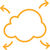

Who we are and what we do
At the Digital Skills Organisation (DSO) our priority is making sure that digital skills training in Australia produces job-ready candidates with the skills that employers need.

Innovative training
We develop fresh, innovative ways of training people in digital skills.
Accessibility
We make world-leading digital training more accessible.

Relevance
We are working towards creating a training system that is fast, relevant and responsive to what industry needs.
Impact
We curate and initiate impactful projects and initiatives in the digital skills sector